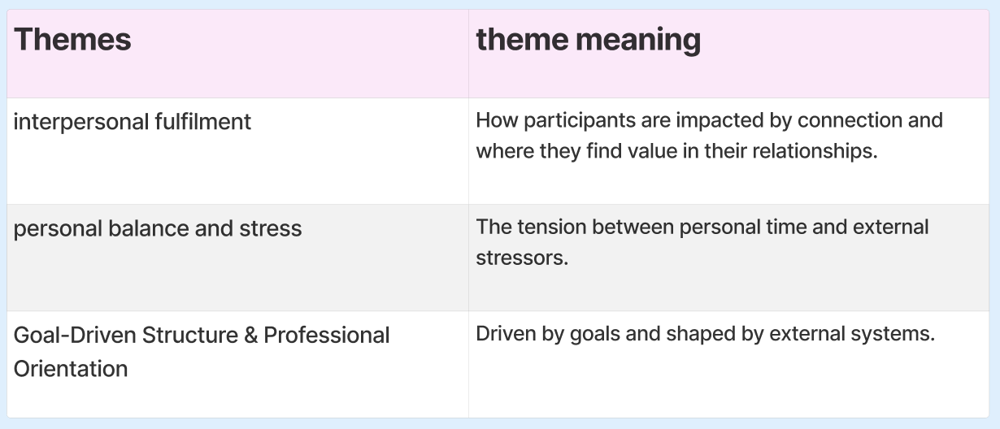

Competitor Analysis
comparing what's out there
Where competitors sit
By placing them on this graph it allowed me to see visually and simply where the disconnect was between the competitors, and where I wanted my brand to sit.
The 4 companies each have their sector that they sit in and for my target audience I believe sitting closer towards actively supporting and building connection rather than having a passive stance towards growing connections will ensure I take priority in figuring out ways to achieve this. Sitting between social and professional but closer towards professional is to also make up for the disconnect in the market, but to also allow for a more comfortable and social experience that still holds a professional outcome, in order to connect people.
Interview Analysis
To understand and ensure I take away key points from the interviews conducted, I split the main reacurring elements from the interviews which would later help me figure out key themes.
Key themes from interviews

Three main themes that interlinked in my interviews that solidified my research
Interpersonal Fulfilment – People value deep, meaningful connections — not just being around others.
Balance & Stress – Everyone’s stretched thin, trying to manage life, study, and stress.
Goal-Driven Structure – Lives are shaped by pressure to achieve, often driven by systems like uni or work, and they were always thinking about future goals and what they needed to get there.
finalised target audience statement
Problem statement - finalised
To focus my problem statement better I used the five whys to help me uncover the core issue that the target audience faced, the final green box is what helped me re-focus my problem statement.
User-empathy
user empathy map
creating an empathy map helps me get into the mindset of what my audience needs and become more well-rounded in understanding their outlooks, further helping me in creating a unique persona.
Persona

Creating a persona helps me refer back to them throughout my journey and asking myself if they would benefit from my choices, does it cover their needs, pain points, frustrations, interests, etc.
Persona user journey
My personas current state user journey helps me both ideate as I can directly address each problem she has throughout her journey, and further helps me empathise. A future state user journey later will be done to ensure that her same process she goes through with my solution involved, addresses her needs and pain points.
Ideation
From the current state user journey I take the ideas that would aid my personas journey (and my target audiences) and look at how I can combined the needs, refine and create a solution statement.

From here I cover some aspects I want to be included and work out the inner workings of my solution, which will later be more in depth, but as a base I can continue figuring out the workings.
Now that I have an idea I need to figure out what the business model would like to ensure it is a viable solution